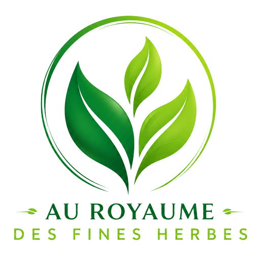

🌐 Sites Web
Un site clair, professionnel et facile à comprendre, conçu pour expliquer ce que vous faites et faciliter la prise de contact.
MAD DevOps aide les travailleurs autonomes, PME et petites organisations à transformer les tâches répétitives, les fichiers dispersés et les processus flous en outils numériques simples, utiles et adaptés à leur réalité.
Le point de départ
Le problème n’est pas toujours un manque de logiciel. Souvent, c’est une méthode devenue trop lourde, une information difficile à retrouver ou une tâche répétitive qui prend trop de place.
Services
Pas besoin de parler “tech”. On part de votre réalité, puis on construit une solution claire, utile et adaptée.
Un site clair, professionnel et facile à comprendre, conçu pour expliquer ce que vous faites et faciliter la prise de contact.
Des outils accessibles depuis un navigateur pour gérer vos clients, projets, suivis, formulaires, données ou opérations internes.
Des applications simples pour accompagner un service, un processus terrain ou une idée qui doit être accessible rapidement.
Des solutions pour réduire les copier-coller, les tâches répétitives, les oublis et les suivis manuels.
Tableaux de bord, portails, formulaires, rapports, suivis ou petites plateformes métier adaptées à votre façon de travailler.
Exemples concrets
Souvent, il suffit de reconnaître le problème : trop de suivis manuels, trop de fichiers dispersés, trop de copier-coller ou une idée qui mérite d’être mieux structurée.
Suivis clients dispersés, soumissions répétitives, factures manuelles, site Web dépassé.
Tableau de suivi, soumission automatisée, portail client, site clair, rappels simples.
Demandes par téléphone, courriel, Messenger ou texto. Informations clients dispersées. Rapports manuels.
Formulaire centralisé, tableau de bord interne, suivi clients/interventions, automatisation de rapports.
Rendez-vous suivis à la main, informations difficiles à garder à jour, déconnexion entre le bureau et le terrain.
Prise de rendez-vous, application mobile simple, suivi des interventions, rappels automatisés.
Formulaires papier ou PDF, demandes difficiles à classer, ressaisie d’information, suivis fragiles.
Formulaire numérique, base de données simple, tableau partagé, confirmations automatiques.
Idée floue, peur de partir trop gros, besoin de tester une première version avant d’investir davantage.
Cadrage, MVP, prototype, première version Web ou mobile, plan de développement par étapes.
Méthode
L’objectif n’est pas de faire compliqué. L’objectif est de livrer quelque chose qui règle un vrai problème.
On commence par clarifier votre besoin en langage simple : ce qui bloque, ce qui prend trop de temps et ce qui serait vraiment utile.
On définit une première version réaliste : ce qui est prioritaire, ce qui peut attendre et ce qui doit rester hors périmètre.
On développe une solution propre, utile et évolutive, sans ajouter du poids inutile dans votre journée.
Projet en vedette
Un exemple concret d’application développée pour répondre à un besoin réel de gestion et d’importation de données.

Projet développé par MAD DevOps pour simplifier un processus métier concret et rendre l’information plus facile à manipuler.
Contact
Décrivez brièvement ce que vous aimeriez améliorer, simplifier ou automatiser. Pas besoin de termes techniques.